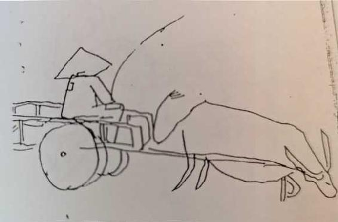

Buổi họp tới, HCKý báo cho anh em cái tin là: anh Viện đến lần trước đưa báo cáo của Ký cho Tiêù ban; Tiểu ban hẹn ngày giờ; anh Viện đến đúng hẹn ấy, thì Tiểu ban đi vắng, đâu đi học! Không chờ đuợc, anh Viện lộn về đây!
Vậy tức là đề nghị xin nghỉ thêm 1 ngày chua đuợc giải quyết. Một vâh đề còn treo, trong chúng tôi, quanh nó tụ lại nhiều đợi chờ, hy vọng, và hồi hộp...
21/9
Chủ nhật
Thế là được 1 tháng! Tức là non 1/5, già 1/6 kỳ hạn lao động đầu tiên này...
Cái nhớ vẫn đẽ đục trong người, không tha... Tôi đã gửi vợ 5 lá thư. Và nhận được 2 (cùng 1 lượt, 1 phong bì)... Hàng ngày, và đêm, tôi vẫn bị động, cái nhớ nó rứt thịt... Khuê, em thế nào? Các con oi, các con ra sao? Có ốm đau gì không? Tiền thiếu thốn thế, sức lực cái gia đình nhỏ bé của tôi, có sa sút nhiều không?... Lúc thì cái nhớ, đứng hẳn ra, làm bão làm mưa, hành hạ tôi... Lúc khác, nó thổi ù ù một thứ bè đệm cho mọi việc, mọi giờ phút. Nó siffle en sourdinel...
Công tác lao động, tôi vẫn làm, cố làm... Tôi hiểu giá trị, sự ích lợi của nó... Song tôi lo surménage. Tôi không thấy nó thành nghê, và đúng sở thích, nên bụng đâm chán. Đối quần chúng, tôi yêu họ, nhung yêu theo cái kiểu yêu những nhân vật, hoặc những câu thơ của mình!... Tôi tìm hiểu họ nhiều hơn về mặt cá tính, ngôn ngữ, cách sống v.v... hơn là tìm những động lực đẹp đẽ nào thúc đẩy họ hàng ngày. Vá, vẫn có một sự xa cách giữa hai bên, do cái thế của tôi, càng khó khắc phục. Ví dụ, làm thế nào hiểu được cuộc đời cùng tư tưởng cứa anh em? Tôi khoanh tay ư?... Chỉ nhận xét, và đoán 22/9
Tinh mơ, tôi đau bụng, như đau đẻ. Bụng rắn hòn, cuộn ruột. [...] Chắc cái món nộm bí với đỗ lạc hôm qua! Anh Trường cũng bị, 1 đêm, 1 sớm, tháo dạ 7 lần...
Có đúng không?
- Mình làm thơ, LĐạt nói, tự nhiên như người ta ca hát!... Có đúng vậy không?... LĐạt có phải là con hoạ mi sinh ra để hót hay không?
- Mình thấy nghệ thuật, ĐĐHưng nói, nó đầu tiên là một besoin của mình... Mình phải satisfaire nó....
- Không phải... Tôi nói... Nó là một besoin social... Nghệ thuật sinh ra ở trong xã hội, và vì xã hội...
- Trước đó, nó là một pỉaisir, một besoin của mình hãy... Còn tác dụng xã hội của nó, mình không phủ nhận, song đó là đúng về khách quan mà thấy thế!
Theo tôi, đó là điều cũ. Và sai. Thử hỏi: nếu ĐĐHưng từ bé sống trên một hòn đảo, cô độc, thì liệu anh ta có cái besoin và plaisừ nghệ thuật ấy không?
Besoin nghệ thuật không phải do mình, vì mình, dù khi anh tưởng lầm như thế!... Thực chất nó là một yêu cầu xã hội. Giác ngộ bản chất ấy, anh mới đi được xa. Thoát khỏi những lầm lẫn, những hoả mù, nó kìm anh chậm lại...
Nói về nghệ thuật, tôi thấy buồn... Tôi phải khắc phục một cái khó lớn quá. Tôi cũng thú thực vói anh em. Cái esửiéticịue của tôi, nó là esthétỉcỊue de la douleur, nếu có thể gọi thế!... Thế kỷ truớc, chế độ đau khổ truớc thì phải... Bây giờ, tôi phải trèo qua cái esthétỉcỊue ấy, một cuộc vuợt Himalaya!... Đây là thòi đại của niềm vui sinh thành. Một thòi đại vất vả, phức tạp, nhung mà thời đại lạc quan!... Tôi thừa cái chất vất vả phức tạp, mà thiếu cái chất lạc quan. EsthéticỊue tôi nghiêng về thế kỷ 19!... Song, tôi cũng nhận xét rằng, có khá nhiều anh mácxít vulgaires, chỉ đòi nguôi ta lạc quan, mà đánh chìm những cực khổ còn tồn tại của thời đại ta đi, vậy cũng lệch! Họ làm thế, là xúc phạm chủ nghĩa Mác, xúc phạm lịch sử và nghệ thuật!... Tôi đấu tranh với những anh ấy, đồng thời đấu tranh với tôi... Vì chính tôi cũng đã từng xúc phạm chủ nghĩa Mác, lịch sử và nghệ thuật thòi đại ta!
23/9
Cái kế hoach của Klung này
- Tôi cãi miết!... Ông Thỉ nằm đắp chăn rồi, còn ngỏm lên, nói bô bô... Tôi đi Cải cách cũng cãi miết... Làm thằng đội viên thôi, anh không bằng lòng thì cho tôi sang đội khác! Thấy sai, tôi lại cãi miết!... Các ông ấy cứ theo diện tích rồi tính quy ra hoa mầu! Thế là nhu quy phú nông hồi Cải cách! [...] Tính toán con số này khác, có biết cái chất đất ở đây nó ra sao mà những tâh này tạ khác, tính la liệt!... Hì... Tính, tính... cột cái con chim tròi...
-Tôi đọi đến năm 60, cho nó hết tình nghĩa... Hễ mà chưa Thống nhất là tôi báo vói ban chỉ huy, chi báo thôi, rồi tôi đi miết xuống xã, tôi làm một cô.[...] Muốn kiêm gì thì kiểm... Tôi đợi đến năm 60, cho nó hết tình hết nghĩa đã...
24/9
Trưa nay tôi lại làm thêm một lốp toán lóp 6 nữa. Anh em đòi hỏi quá. Không đừng được. Một tuần lễ, sẽ học 3 buổi trưa... Như vậy, tưong lai chắc đôi bên sẽ cùng mệt... Tôi cũng muốn đào tạo một số, để sau này dìu dắt đa số. Anh Cừu tích cực lắm: - Chỉ sợ anh mệt! Còn chúng tôi thì tha hồ... Anh có thê’ nghỉ thêm 1 buổi, 2 buổi lao động nào khác, để mà ghi chép, nghỉ ngoi...
Tôi từ chối đề nghị đó. Vì không đúng vói sự quy định của trên, đối tôi.
25/9
HCKý về Hà Nội. Hôm kia, một liên lạc đem công văn, quần áo, vói tiền lưong xuống cho anh, bị roi mất hết. Anh liên lạc kỳ! Một thứ mauvais poètel Ai lại buộc ở poócbaga, mà roi lúc nào không biết! Chỉ có đạp từ Phả Lại tói đây mà mất.
- Chắc Tiểu ban có trả lời về đề nghị ảia tổ mình... HCKý nói... Nhưng mà roi mất, không hiểu thế nào...
26/9
- Anh đi bỏ phân mía hử? Ông Cuộc hỏi tôi.
- Phải.
- Cuốc lỗ hay vun gốc?
- Cuốc lỗ.
-Vậy chứ!... Phải nếm trải hết, vậy mới là anh hùng quân tử chớ! Hì! Hì...
- Hì...
Vào bãi mía, nhu vào một chiến truờng đặc biệt, có muôn lưỡi guơm cài tứ tung. Tôi với ông Kình cuốc lỗ. Tức là cuốc hai bên gốc mía. Gốc nó trơ ra thành một cái lỗ. Động rễ, mềm cây, rê nó đứt đi một ít, vậy sẽ kích thích mía mau lớn. Tốp bỏ phân sẽ rắc phân vào lỗ đó. [...] 27/9
Một chị áo vét cán bộ, tóc phidê, chân đi lếch thếch trên đuờng bụi. Trời đã nhá nhem. Một đứa bé áo sơ mi quần soóc đi cạnh, tay xách dép.
- Dần đó hử? LĐạt hiện ra, đua tôi hai bọc đồ... Mày đua bà ấy lên ông TPhác! Tao về ăn cơm.
- Chị lên chơi bao lâu? Tôi hỏi.
- Mai tôi lại về ngay anh ạ, Chị Nghĩa nói... Hôm nay đuợc nghỉ... Đến 9 giờ, tôi mới biết là nghi... Thế là tôi đi ngay... Hôm nay đi gặp đủ điều may, anh ạ...
Tôi dẫn hai mẹ con đến TPhác. Đường đi, mọi người nhìn. Trông chả lạ mắt... Tôi khuyên bà nên ở thêm một ngày. Tôi cũng nói về TPhác cho bà yên trí.
- Ông Nguyễn Xuân Khoát đi Liên Xô về... chị Nghĩa không hiểu sao lại nói chuyện ấy... Ông ấy bảo phải học Liên Xô... Bên ấy người ta đi aỉlégro, mà mình lại đi andantio.
Tôi bảo chị chờ bên ngoài. [...] Một người đàn bà đến cái xứ hầu như toàn đàn ông này, thật khó xử...
28/9
Chủ nhật [...] Đọc Bartok.
29/9
Đi giồng dứa...
Điện đã chạy sình sình. Ban đêm, đã có mấy mảng sáng bành bạch, ánh trăng càng tăng vẻ mộng...
30/9
Đàn bò mói về. 22 con. [...]
1/10
Đi giết rệp mía.
Rệp trắng, nằm dưới lá, từng chùm.[...] Anh sẽ cầm một cái giẻ, lau lá có rệp. Lau đi lau lại. Các đốm trắng sẽ vỡ bọp, chấy ra một thứ mủ tanh. [...] Quần áo bị nhiều vết mủ rệp. Bàn tay đa sát hôi quá, rửa xà phòng vẫn còn tanh. Bữa sớm, không dám cầm cháy ăn. Khi và, mùi tanh ở tay bốc tận mũi, lợm giọng.[...]
Đang làm, tôi nghe rõ tiếng "Anh oi!". Tiếng nguôi vợ... Quay ra, không thấy gì! Quái!... Sao thế nhỉ? Tai tôi nghe rõ mồn một... Tôi không tin những phép lạ. Song giải thích hiện tượng ấy bằng khoa học nào?... Lúc ấy, làm việc mệt nhọc, không phải là lúc nhớ. Chỉ có cái là ít ngày nay, tôi nhói tim dữ... Trước Kháng chiến có bệnh ấy, song trong Kháng chiến, tôi đã tự nhiên bỏ được bệnh quý phái ấy đi rồi... Bây giờ tự dưng nó lộn lại... Cái tiếng "Anh ơi!" tôi nghe kia, có phải tiếng gió với cây cành, đập va nhau, rồi bị cái tai ù của tôi thu nhận lầm đi không?
2/10
Lại mía. Bắt rệp xong, đi lột lá.
Cái giẻ giết rệp, mủ dầy cộp, tanh ngheo ngheo... Tôi có cảm giác, đây là một bác sĩ, nặn mủ cho hàng nghìn người bị lở nhọt, mà chỉ có mỗi một cái giẻ!... Cứ hết mụn người này sang người khác. Kinh tởm.
3&4/10
Làm phó mộc. Đục lỗ, dựng chuồng bò.
Cầm xà beng vỡ một tí đồi.
Bóc lá mía.
Lá mía. Công tác này kinh quá. Cứ một ngày bóc lá mía, là vài ngày xót và nhức tay... Cái quần còn tốt, mà chỉ mấy ngày bị nó cứa, rách đầu gối.
Một cái tin buồn. TPhác nhận được thư vợ, chị báo tin: hôm thứ Hai, chị gặp HCKý. HCKý bảo là anh Cương không cho ai về, cả tổ sẽ ở một lèo, tận Tết. (Ngoài ra, vợ TPhác bị sẩy, theo lòi TPhác, vì đi Chí Linh thăm anh về, mệt quá!)
Cái tin không được về đột ngột: Một thứ sét! Sự đối xử đó của trên, lại nhắc tôi, nhớ lại vị trí của mình! Bây giờ tôi chưa có quyền vui.
5/10
ĐĐHưng đặt vâh đề đạo sống, iảéal... Tôi nói: communisme est 1 art nouveaul Có vậy thôi... Yêu chủ nghĩa cộng sản, dù sự thực hành nó có khi va vấp, lỗi lầm, thậm chí thất bại bộ phận, tạm bợ... Chủ nghĩa cộng sản có nhiều, một muỉtituảe, một trăm thứ hoa nghệ thuật tưong xứng, nói theo hình ảnh Trung Quốc. Ta nên cố trồng lấy một loài hoa.
6&7/10
Gió may lại đổ bộ xứ này. Đêm ngày, bụi đi trên đường, hàng đoàn hàng đoàn những linh hồn, trắng mờ. Gió gọi trong người ta thứ nhớ chu kỳ dai dẳng, là nhớ quê hương... Một lũ lĩ cảm nghĩ, đau khổ, và thắc mắc quằn quại theo những bộ điệu xấu xí, thảm thương, quái gở. [...] Trong những ngày như thế này, nguôi ta đối vói cấp trên, đối vói cả công tác mình làm, nó không được ổn.
9/10
Sáng sớm, tự nhiên thấy khác thường lệ. Ba bốn anh đi tháo màn các giường và quét dọn! Có phải tổng vệ sinh? Hôm nay thứ Năm, sao lại tổng vệ sinh? Vả mói tổng vệ sinh hôm nọ!... Hon nữa, trong không khí, có một cái gì khang khác: nét mặt quan trọng, chờ đọi... Tôi đoán già: -Chắc là đón ai đây! [...]
Buổi chiều thì đích thân đồng chí Phạm Văn Đồng đến khu vực này, và qua thăm tập đoàn Thống nhất... Tôi đang vận quần đùi, vội lánh mặt: mình không có vị trí ở đây! Vả, anh Sắc, nguôi thợ điện (và cựu phóng viên báo Thông nhâĩ) cũng đi theo Thủ tuớng tói tập đoàn tôi, anh ngồi duới bếp, cạnh tôi, và hỏi: "đây có một thằng Nhân văn phỏng? Đỗ Đình Hung phỏng?" Không ai đáp. Tôi lủi đi: một con cuốc buồn túi.
Sau buổi meetìng, tự dung chúng tôi đuợc triệu đến gặp Thủ tuớng. Một vinh dự bất ngờ. Cái thân phận mình, sao lại đuợc vinh dự đó?
- Chào các đồng chí! Đồng chí Phạm Văn Đồng thân mật bắt tay chúng tôi. (Chữ đông chí nghe lạ tai và ấm áp thê'? Tôi đã quen nghe nguời ta gọi tôi là tên, là y, là hắn, hoặc gọi TDần trống không)
Anh Viện báo cáo đồng chí vài câu.
- Từ hôm anh em xuống đây, anh em đều cố gắng! Phâh khởi...
- Tốt!... Đồng chí PhVĐồng nói... Cần nhất là sincéritél... Các đồng chí có phâh khỏi thật không?
- Thật ạ! Chữ ạ khẽ, chữ thật to, ĐĐHung đáp.
Gian phòng khách ùn nguôi. Anh em xông vào xem, đông quá, đứng lố nhố khắp.
-Tôi gặp các đồng chí một chút thôi... Đồng chí PhVĐồng nói... Rồi phải đi ngay. Các đồng chí có cần nhắn gì về Hà Nội không?
- Không!
- Không!
Chúng tôi lấy làm lạ.
- Thật mà! Đồng chí nói... Có cần quần áo, sách vở gì không? Cứ nhắn. Tôi có thể làm được cái gì giúp các đồng chí, thì tôi làm... Thế nào? Thật mà...
Không khí hoi bí cho bọn tôi. Mọi người chờ đợi. Tôi nhìn Hưng, Châh 1 , Đạt. Chúng im tịt, không nói gì. Tôi cuống quá. Thôi phải đánh liều, nói một cái gì, cho nó gõ cái không khí này. Chưa chuẩn bị gì hết, nguôi không bình tĩnh, mặc, tôi cất giọng cảm động nói:
- Thật, anh em không có gì nhắn... Đồng chí tổ trưởng đây (tôi chỉ HCKý) đã săn sóc anh em đầy đủ... Chỉ có công việc của chúng tôi làm, nhân gặp anh, xin cũng nói... Cái việc đi lao động... thật ra không phải chỉ có nghĩa làm cái này, xách gồng cái khác... Mà đi lao động, tôi nghĩ là mình phải thử thách mình xem có đi được vói xã hội chủ nghĩa hay không?... (Đồng chí gật gật,... tôi càng cuống, tuy thú vị)... Qua một thòi gian, chúng tôi thấy có nhiều vất vả, phải cố nhiều... Song thấy trong bụng có cái thích. Thích thật! Chúng tôi tin có thê đi theo xã hội chủ nghĩa, thực hiện tốt chủ trưong của Đảng... Tôi mỗi lúc mỗi cuống, kết luận thế nào?... để... để... lại có thê’ như trước... về vói Đảng... như trước...
Tôi thở phào một cái. Xong. Đoạn cuối hỏng quá, toàn chữ không, mà hoi vội.
- Tùy các đồng chí thôi! Đồng chí nói... Bây giờ không ai quyết định nổi, ngoài các đồng chí tự quyết định lấy!... Còn chúng tôi thì... mong, mong lắm!... Thế là tốt!... Nó phải có chật vật, chứ êm đi thì chưa chắc tốt đâu... Chật vật tha hồ, song cốt nhất cuối cùng là tốt... Cuối cùng tốt là được.
Buổi gặp tan. Đồng chí để lại trong tôi một cái gì như là niềm tin, như là một niềm vui, như là một chút tình thương của Đảng.
12/10
HCKý giải quyết việc về Hà Nội. Tôi được về, chữa cái mũi.
Cu Chấn cafard. Anh em phân tích. Đáng lý cu cậu manger ở cái lỗ đít lòi rom thì sẽ được về. Đằng này cu cậu lại đi manger ở cái hĩm của vợ! (Ám chỉ việc vợ chửa, cho trụy thai.) Cái việc iỉỉégal, lãnh đạo không cho là phải.
15/10
Thư ĐĐHưng gửi Đỗ Nhuận
(trích)
Tôi đã hai lần viết tho về, nhưng cuối cùng không gửi. Vì có những chỗ viết ra sợ hơi sớm, nói rồi không làm được. Hôm nay, sau vài tháng lao động tự thấy có một vài thu hoạch, tôi viết thơ về anh kể vài mâù chuyện "tâm sự"...
... Tôi đã kinh qua tập sự một số việc lao động thường xuyên của tập đoàn: ngoài đồng, trên núi. Thường thì cày bừa, lấy gỗ, bón phân, chăn bò. Việc gì cũng cố tham gia một chút để tìm hiểu, nhưng gần đây thì nặng về chăn bò.
... Nhưng còn nhiều lần phải đấu tranh đau khổ lắm. Đau lắm. Tôi đứng giữa nhiều ý nghĩ chia nhau xô đẩy tôi, lắm lúc người tôi rơi thành từng mảng lăn ra, không chắp lại được... Có nhũng lúc tròi đất như xoè tay đón lấy tôi. [...] Nhung cũng có nhiều lúc, bi quan, hoài nghi sà ập lấy tôi thì tôi nghĩ: cấp trên đưa tôi về đây để trừng phạt, lấy không gian xa cách và thòi gian không hoạt động [...] để trị tội một con người lầm lỗi... Nhất là những ngay đầu thức dậy trước mặt trời, đêm về tê dại thiếp đi. Có nhũng ngày đi vác gỗ, đầu gục xuống, chân bước thập thễnh trên gốc cây phát chéo như dao cắm ngược, dây chằng vào cổ. Có những lúc tuốt lá mía, hai tay sung lên, tôi nằm bò xuống... Rồi đi cuốc, hai tay, mười ngón xù xì, nghĩ về cái chuyện đàn, nhạc khôngbao giờ có nữa... Mấy quyển sách mang đi đầy bụi lở ở trên tường đất, hai bên nhìn nhau... Nhũng lúc này, tôi như nguôi ăn năn, đánh gai sắt vào thể xác đê’ chuộc tội cho tâm hồn... Tôi coi cấp trên như Thượng đế cầm cân nấy mực, xử tội tôi... [...]
(Dưới, anh coi đó là chủ nghĩa cá nhân... Anh nói về Đảng: nghiêm khắc là phải. Chứ muốn trùng trị thì khó gì? Đi đây là Đảng muốn anh thành người tốt. Đau khổ vô ích, là hạ thấp giá trị mình.
Dưới nữa là câu chào và: "Nhờ anh chuyển lòi chào thăm anh Văn Ký và những người quen. Tôi ít viết được tho vì thòi gian eo hẹp. Tho này là mất 1/2 ngày Chủ nhật rồi. Chiều phải dành để giặt quần áo và tắm.")
16/10 đến 31/10
Lên đường về Hà Nội! Tất cả đều như mọc cánh: chiếc xe ngựa, lùm cây, quả đồi...
Bước vào nhà. Mẹ con Kha kêu "bố! bố!"... Con Kha nhảy từ giường xuống, cũng kêu "bố! bố!" the thé. [...] Gian buồng cửa đóng tối om. Con bé đứng lặng mãi, như đã nhận được bố, lại như chưa nhận được, bần thần...[...] Cả nhà ba mẹ con đều ốm. Con mẹ sốt rét và đau bụng. Con Kha sốt, thở khò khò. Thằng cu Còm, vì chủng đậu, bị sốt. [...] Sáng 20, đang rửa mặt, ông Đường béo ị, dựng xe đạp trong ngõ, tròi mưa nhoà nhoà.
- A! Anh Đường!
- A! Chú! May quá... Đang định... đang định... đánh điện... gọi chú về! Ông mất... mất rồi... chú ạ...
Cái loại tin ấy khi nào cũng đến đột ngột... Bố tôi yếu quá rồi. Tombé en infance từ hon năm nay... Mùa Đông năm ngoái, tôi đã nghi rằng bố tôi về già...
- Ông mất... 2 giờ đêm qua... chú ạ!
Tôi không nghe tiếng... Người trắng bệch, trạng thái vô tri... Vụt cái, tôi nhờ hồi Việt Bắc, trước khi đi chiến dịch Lê Hồng Phong đợt 1, tôi được cái tin nguôi mẹ thân yêu và tội nghiệp của tôi mất... Lần ây, tôi cũng không khóc... Mãi 3 ngày hôm sau, đang đêm, tỉnh một giấc mơ, mói ngồi dậy khóc rưng rưng trong bóng tối.
Đám ma làm giản đơn, không kèn không trống... Ông cụ tôi nằm ở nghĩa trang Họp Thiện, ở Láng, chỗ Voi Phục.
Mấy ngày sau, cu Còm vói con Kha lại bị rechute. [...]
- Anh ơi!... Vợ tôi bế con Kha trong lòng, mắt rưng rưng... Hay là, ông nhớ cháu... mà bắt cháu đi theo đấy!
- Em chi tin nhảm.
[...] Ớ vợ tôi, khoa học xen lẫn với dị đoan, theo cái thế cài răng lược.[...]
Thứ Tư (29/10) định đi, phải hoãn lại. Còn bệnh tôi thì mũi tắc, nếu cắt, phải mất hai tháng, hết cả thời giờ. Tôi đành hoãn lại, chờ hết hạn, Tết về hẵng hay. Hiện nay chi dùng thuốc xông với epỉétrỉne, cho bệnh đỡ phát triêh.
Sớm 31/10, lên đường lộn lại Chí Linh... Con mẹ nó lại sốt đêm qua... Khổ! cái gia đình neo người của tôi! Hễ con ốm, mẹ thức đêm săn sóc, là lại ốm!... Hễ mẹ ốm, là hai con cũng lại ốm! Một cái vòng luẩn quẩn.
Chí Linh. Mùa Đông đến đây sớm hơn Hà Nội!... Khí lanh tẩm vào mênh mông!... Đêm đen hắc ín, các vì sao như bị đóng băng xa tít trên cao!... Ban sớm tôi còn ở góc phố nhỏ, ở căn buồng nhỏ Hà Nội. Đêm nay đã nằm bẹp, dưới sức đè cúa mênh mông, của cái lạnh, của các ánh sao Chí Linh này.
... Lần này, tôi thêm nhớ thêm thương... Một người bố mất... Vợ yếu gầy đi... Và thằng cu Còm, nhớ nó đáo để, nó đã có "cá tính", miệng cứ cười toét ra, tươi và kháu tệ...
2/11
Chủ nhật
và 3/11
Hội nghị phát động thi đua kế hoạch vụ Đông Xuân thắng lợi vượt bực.
ơest 1 mữaclel
Ngày 2, người ta còn bỡ ngỡ, hoài nghi, kêu ca đặt mức cao. "Cái lối kích thành phần, kích sản lượng đây!"
Sớm 3, cuộc họp tập đoàn nhận mức thi đua, cũng toái phở, chậm chạp, [...], một cách chịu đụng, chả lẽ không nhận! Chẳng có tính toán gì cụ thể.
Lúc lên hội trường, có cái bảng đen ghi mức thi đua. Ua! Có tập đoàn nhận những 13 tấn/lha lúa! Vượt mức 5 tâh. Họ làm ăn thế nào mà nhận hăng vậy? Anh em Thống nhất nhìn nhau cười nhạt, lo lắng. Ông Cừu tái mặt đi.
Vào họp, chủ tịch Chí Linh lại lên:
- Hôm qua, các đồng chí làm tôi suy nghĩ, vì cái 8 tâh của các đồng chí. Hôm nay, tôi sẽ lại làm các đồng chí suy nghĩ. Vì hợp tác xã Đồng Tróc họ nhận 16 tâh! Đây nhé... Hôm qua tôi đến họp vói họ. Ngang đường, tôi ngắt vài bông lúa, đếm hạt, tính trung bình 1 bông 118 hạt. 1 bụi 7 bông, tức là 962 hạt; 2 centi 1 hạt, tức là 1852 centi, vị chi là 0,185 kg. Trong 1 mét vuông cấy lối 5x15, được 140 bụi, tức là 25 kg. Vậy 1 ha, bỏ rẻ đi cũng được 25 tâh. Do đó hợp tác xã họ nhận 16 tâh. Tức là còn thấp đấy! [...] Thế thì các đồng chí suy nghĩ lại đi!... Chứ 8 tâh thì e rồi tôi không biết giải thích với đồng bào ra sao? Nông trường mà lại có 8 tấn! [...] Cái 8 tấn, 12, 13 tấn của các đồng chí lạc hậu rồi!...
Hội nghị nghỉ, để suy nghĩ.
Thế là nhảy vọt ngay trong hội nghị. Tập đoàn tôi nhảy từ 8 tâh lên 17 tấn. Mọi noi cũng na ná vậy. Lúa, mía, sắn, v.v..., nhảy vọt toàn diện. Mà không phải bâng quơ! Nguôi ta tính toán cụ thể, tùng bông, từng hạt, từng hạt... C'est ĩ miracle.
Không khí như đun sôi. Người ta lo, người ta còn nhiều thắc mắc, nghi ngại. Song người ta tin.
- Có làm được hãy nhận! Chủ tịch Chí Linh động viên. Phiêu lưu cũng hỏng. Bảo thủ cũng hỏng... Nếu nhận thì phải cố gắng phi thường... Đồng bào bảo thượng cổ chưa ai làm được. Tôi bảo thượng cổ là bỏ đi. Bây giờ làm hơn tất cả từ thượng cổ trở lại!... Nhưng phải cô' gắng ngày đêm phi thường!
Tuần lễ 3/11 đến 9/11
Không khí chiến dịch. [...] Người ta nói những chữ: chuyển, chuyển mạnh, nhảy vọt, nhảy dài, dám nghĩ, dám nói, dám làm... Người ta nghĩ đến ngày mai, say sưa: "Chu cha! Để đâu cho hết của!"... "Nay mai về Nam, làm theo phương pháp này thì vứt đi không hết lúa!" [...]
Dạo này rưoi... Mọi người ốm, đa số mũi khụt khịt. [...] Vậy mà làm hung. Sớm 6 giờ đã ra đồng "đón mặt trời". Đứng bóng chưa chịu về. "Chưa làm được gì, đã trưa rồi!" Chiều 2 giờ đã đi, tối mịt mới mò về. Đúng là đón mặt trời mọc, tiễn mặt tròi lặn... Ban trưa, ban tối, người ta bàn bạc, họp hành. Đang có một sự bồng bột thảo luận. Bồng bột làm việc. Ngày lao động kéo dài ra 9 tiếng, 10 tiếng. Mỗi người tăng sức. Anh Đồng một mình dọn hai chuồng phân (trước phải hai người). Chăn đàn trâu bò (16 + 46) 62 con, nay chỉ hai người (trước 3).
Tôi mệt nhoài. Ban trưa ngắn tệ. Dạy văn hóa xong, uống bát nước là đi làm... Sớm dậy đúng giờ giấc, ho hải rồi đi... Tôi có cảm giác ngồi trên một chiếc xe tăng tốc độ đột ngột... Những lúc thòi gian phóng nhanh vậy, những thắc mắc không có chỗ, bị vứt ra ngoài xe, lăn lóc dọc đường. Đây là những ngày 7 dặm chắc! Lãnh đạo đã trang bị cho cuộc đời một đôi hia tốc hành... Chúng ta sắp biến thành những Thần hành Thái bảo cả!
10/11 đến 15/11
Tuần lễ gặt.
[...] Công việc có 4 thứ chính: gặt, bó, gánh, đập. Gặt đau lưng. Bó rát tay. Gánh bết vai. Đập: vừa rát vừa bết tay, mỏi nhất ở cánh tay, bả vai.
Tôi cố làm cho được như mọi người... Chi ý định ấy đã chứng tỏ tôi chưa làm được như mọi người. Gặt mệt đằng gặt. Bó mệt đằng bó. Gánh mệt đằng gánh. Đập mệt đằng đập... Nhưng kỳ này, tôi phải thấy tôi dai sức thật. Anh em bảo: anh Dần mà ở một năm, rồi việc gì cũng làm được hết. Anh Cầm nói: anh ấy làm khoẻ thật. Người có sức bền. Chỉ phải cái làm "chưa quen sưong" thôi.
Trên đề ra thăm dò: chủ trưong sáp nhập một số tập đoàn vói nhau. Thống nhất nhập với An Chính.
- Ông ấy muốn tiện cho lãnh đạo, anh Câm nói. Đem tập đoàn kém nhập với tập đoàn khá. Để rồi nhiều người nhiều miệng. Xem ba cái thằng nào ngang bứa đem ra đấu tranh phân tích...
- Nếu nhập, tôi đánh cho lỗ đầu ra, anh Thi nói. Lâu ngày chưa được đánh nhau, ngứa ngáy tay chân. [...] Đuổi khỏi tập đoàn thì về nông thôn, đéo một cái càng sướng!
-Tôi nói này: hễ nhập các tập đoàn vào nhau là tôi xin về nông thôn. Làm lấy một mình, cuối cô vợ. Vậy thôi... ông Hoàng nói... Hì!
Không hiểu sao anh em lại phản ứng chủ trương đó mạnh thế?
17/11
Một cuộc họp...
Theo trên, tức là các tập đoàn thương binh ở Đông Triều, anh Tương nói, họ lên sau, gặp nhiều khó khăn. [...] Vì vậy liên đoàn lãnh đạo chúng ta họp các chi ủy, có đề ra việc chúng ta lên Đông
Triều để giúp anh em. [...] Ta đi một ngày thôi, là ngày 19. [...] Ô tô đưa đi, có cờ treo, khẩu hiệu giăng, râm rộ...
23/11
Trở về trước, khu vực này làm một việc đặc biệt: khai hoang. Nó thành một chân trời riêng, tách khỏi phong trào toàn bộ. Cũng gần như xã hội chủ nghĩa, nhưng chẳng thấy nói những chuyện như: lúa vệ tinh, chống bảo thủ, chống tư hữu, v.v... Chỉ nói những: võ gốc, phá hoang, lúa râu tôm...
Nhưng đến dạo này, khác hẳn. Khu vực Chí Linh tham dự chiến dịch Đông Xuân với toàn miền Bắc. Tư tưởng bảo thủ chòi ra, rõ, mạnh là đàng khác. "Khí hậu ta khác khí hậu Trung Quốc", "Cày sâu sẽ nổi đất vàng, sỏi, đất sét", "Noi khác được, chứ Chí Linh thì không được". "Thôi cứ nín hoi mà làm", anh Cầm nói như phát cỏ: "Tôi chỉ cho là đồng niên 8 tâh. Hơn nữa, cứ chặt đầu tôi đi!" [...] Có anh nói, nghe có lý, chẳng hạn:
- Cứ biểu lấy phân mà dâh đi tôi không tin!
- Phân cải tạo đất chớ còn gì? Kỹ thuật mói mà anh không tin à?
- Phải do đất làm chính. Căn bản là đất, phân là phụ... Nếu anh biểu chỉ cần phân, tôi cho anh cái núi kia kìa... núi đá đó, tôi tải phân, gánh nước lên cho anh! Anh trồng lúa tôi xem!
- Anh lại bằng kỹ sư... Mới lóp 3, lớp 4, đòi cãi Bộ Nông Lâm!...
Hôm nọ, đi lao động XHCN ở Đông Triều, trước sự thắc mắc của anh em, Ban quản trị chùn lại, không dám phân công ai. Kết cục: bốn ông quản trị lõ mõ đi vậy.
Hôm nay, cũng ở Đông Triều, mà lại là ngày Chủ nhật "thiêng liêng", thế mà xe đạp túa đi từ tinh mơ: đi lao động ngày Chủ nhật. Tròi! Vì sao? - Vì có 2000 đ một ngày công, trời ạ! Thật là chẳng cân ai đả thông ai! Nguôi ta túa đi, theo thế lực gì đó? Có nguời đùa: tu bản chủ nghĩa, đi nhanh thế? - Anh em chả túng quá, xã hội cũng nên tha thứ cho họ... Ta mói đang ở thòi kỳ quá độ.
Cái cá nhân tu hữu lộ mặt nhe răng nhiều nhất trong việc sáp nhập các tập đoàn. Theo kế hoạch dự định, Thống Nhất sẽ nhập vói An Chính và Quyết Tiến.[...] Nguôi ta đang suy bì An Chính hụt vốn nhiều, của nả chang có gì, trâu bò lèo tèo mấy con, mía lúa đều xấu... Vậy là cái gì?
25/11
TPhác đi khám ruột, lại lòi ra bệnh không ngờ là: lao phổi. Trông anh chàng rộc đi. Cái Hà Nội với những sự vô điều độ của nó, đã mỉner cu cậu. Nhung cái lo âu cúa cái bệnh đến thình lình thế, càng miner cu cậu hon gấp bội.
Bây giờ TPhác lại lộn về Hà Nội. Để bác sĩ quyết định dứt khoát xem: nội trú hay ngoại trú?
Nội trú thì không có gì bàn nữa.
Còn nếu ngoại trú thì TPhác xin xuống đây. Điều duỡng tại Chí Linh! Nhu thế vừa lợi cho sức khoẻ, vừa lợi tu tuởng, sẽ tiến bộ đuợc cả về hai mặt ấy.
- Sáp nhập rồi thì sao? Ông Hoàng nói... Rồi thì thằng vác cầy vác cuốc đi làm, thằng vác giầy vác guốc đi choi à? Hì!... Vậy đó. [...]
- Biêù làm to lên, ông Kình nói. Sao nông trường Quỳnh Côi đang 300 lại giản chính đi còn 50? Nông trường tiến bộ hon tập đoàn sao lại giản? [...]
- Tôi chẳng nghĩ gì con trâu con bò béo với gầy, anh Cầm nói. Tôi chi thắc mắc từ đầu, sao biểu đi sản xuất, anh em đi, còn những anh chây lười ở lại thì lại xếp công tác cả? Bây giờ lãnh đạo nói gì tôi cũng không tin nữa.
26/11
Việc sáp nhập sôi sục. Lúc nào cũng thảo luận. Số người tán thành mỗi ngày một đông hon.
Anh Cầm nói nhẹ:
- Ấy vậy mà rồi việc gì cũng xong...
Anh cũng đã chuyển.
- Ông Dần này, ông Cuộc nói nhỏ... tôi tâm sự với ông chuyện này... tôi... tôi muốn hỏi ông xem,... ở Hà Nội, ông có gia đình... căn bản ở đó... ông có biết cái món công trường thừa, chính phủ thải... có một bà nào giói thiệu cho mình làm vợ!... Có thì mình bán cái xe đạp, cho bà ấy làm vốn... buôn bán... Hì...
Ống Vui
Chủ tịch kiêm bí thư một xã ven biển Quảng Ngãi. Tính khủ khỉ khù khì. Đặc nông dân. Lo việc đêm ngày ngơ ngác cả. [...] Lo việc đến nỗi đâm ngây! Mặt mất hồn. Tính không ra nữa, đang chuyện này nhảy sang chuyện khác. Chi bộ bàn cho ông nghỉ, đi bệnh viện. Thay một đồng chí khác.
Ông Vui cứ vác ba lô đến văn phòng xã. Rủ rỉ hỏi: - Tôi bị kiểm điểm gì? Các đồng chí cho tôi biết vói.
Cáng ông đi, ông không chịu: Tôi nằm để các đồng chí cáng, ngó nó kỳ lắm!... Thế là đi bộ.
Bây giờ ông vẫn chua khỏi ngây. Làm bí thu tập đoàn Quyết Thắng. [....]
Anh Tân
Nguôi simpliste. Cái gì trên đưa xuống là "đúng! đúng!". Người ta vặn đúng thế nào, anh nói ấp úng. [...] Nói rất to. Mắt một mí ráo hoảnh. Tay hoa chân múa. Đả thông không được, là phát bẳn, nói như cãi nhau.
Cái anh tích cực mà simpliste, ít tác dụng đối xung quanh. Cái tích cực của anh đó dễ bị cô lập.
27/11
Xã hội chủ nghĩa mói bắn súng hiệu từ đầu năm. Có mấy hột thời gian? - Không khí miền Bắc đã quang quẻ nhiều. Mỗi ngày đến vói những bình minh và những chiều tà khác hắn. Lao lực, lem luốc, và tự hào. Kỳ về Hà Nội, mới xa nó có hơn hai tháng, tôi đã thấy lạ. Buổi chiều xuống, thủ đô lên đèn, bụi vẩn, những đoàn nam nữ sinh vác cuốc đáp trường. Áo ngắn, nét mặt mệt mà vui. Các vị công chức ăn mặc cũng "bình dân" đi nhiều, đạp xe, mặt trầm ngâm. Tôi nhận thấy có những bộ mặt lớn tuổi ngơ ngác, lởn vởn lo âu, cả như sợ sệt cái không khí đang chứa đụng nhiều gió máy, biến thiên. Họ thuộc về thếhệ trước... Mùa Thu pha vàng những buổi chiều đó. Cả Hà Nội xa hoa trước, biến thành một faubourg lớn, lem luốc. Tôi vốn yêu cái lam lũ của ngoại ô. Hà Nội đến hôm nay đã tiến thêm vào đường "lao động hoá" bao nhiêu? Số thanh niên, một số tôi gặp, chuyên tợn. Tôi thèm cái fanatisme XHCN của họ. Xưa kia, trong Kháng chiến, tôi cũng đã iìmgfanatique\ Không nên sợ fanatisme\ Đó là lửa! Tôi đang lo: sự nguội lạnh và ngập chìm. Thòi đại, cứ xem cái đà này, sắp đi những bước 7 dặm đây!... Sẽ có những người chóng mặt, lạ cái thành phố, cái thôn quê sinh trưởng của mình. Có ai là Essénine không?
Muốn hiện đại hoá tho ca, trước hết phải hiện đại hoá mình. Trước hết mà song song. Song song mà trước hết -Pasternak có tài biết mấy? Cũng đáng thương đáng trách bao nhiêu? Thiên hạ có nhiều Pasternak, bằng cỡ hoặc cỡ nhỏ... Văn Cao với bộ mặt vàng khè, nép bên cửa, nhìn Hà Nội đang đi rầm rộ, mắt anh chàng có tia sợ, tia ló xen lẫn với những tia chán chường không? Nếu anh còn biết sợ, thế thì chưa chết. Không khéo anh chàng lại tự hào vói cái Ổ kén của mình, chưa chừng.
28/11
Sau khi đã đồng ý, đành lòng đồng ý ép chủ trương sáp nhập, ông Hoàng quay ra nêu to những khó khăn về tài chính so le, về trình độ quản lý.
Ông Kình kém hẳn vui. [...]
- Tuần sau tôi nghi. Đi Hà Nội chơi. Ông Kình nói, chán chường.
[...] Trong những thời kỳ xô lắc mạch, sự tích cực và tiêu cực càng bày ra, rõ nét, "2 phe" hẳn hoi. Được cái, tích cực tính ở đây vẫn thống trị.
Người ta mổ lợn, nói là "mừng sự sáp nhập sắp đến". Có anh muốn triệt hạ cả đàn gà, và ngỗng. Người ta tính vét quỹ ăn, xem còn bao nhiêu? Còn đến 3, 4 vạn! - Thế thì liên hoan một bữa thật say sưa, "mỗi người một con gà", theo đề nghị của một số, được tán thành.
Anh Trường
Khoảng 25 tuổi. Thanh niên xà beng. Đội trưởng Cải cách cũ. Láu. Nhớ nhiều. Ông Sêpilốp giữ chức gì, ông Malencốp hiện giám đốc nhà máy nào, anh nhớ cả. Dạo vừa rồi, anh có điều không vừa ý (danh từ chính trị gọi thế là bất mãn). [...]
- Trên lãnh đạo chúng ta tức là thượng tầng, thì chăm lo kiến trúc. Hử, thế là thượng tầng kiến trúc! Còn dưới chúng ta ấy, thì ta làm co sở cho trên. Tức là hạ tầng co sở... Bao giờ các đồng chí nghiên cứu đến đó sẽ thấy.
[...] Tài học lỏm. Những kinh tế hạch toán! Những nhà máy dệt kim, vô tuyến truyền hình v.v... Cả ông Magellan, ông c. Colomb, nói cứ vung tí mẹt lên.
[...] Dạo này, anh được bầu chi ủy, và hội đồng quản trị, thái độ khác hẳn. Không còn cái uể oải và lối bẻ bai hành tỏi cũ. Để xem, lại mọc ra những khía gì khác, vói cái tính kiêu đó?
Anh Anh
- Dạo tôi ở trong Nam, việc gì tôi cũng xung phong. Sao ra đây, tôi đâm chán ngán vậy? Phần thì yếu sức đi, nguời bị trúng "cái bệnh tình"! (Anh chả bị "đau bao tử"). Phần thì nhớ vợ con. Có tài gì mà giữ vợ hử ông? Vợ tôi là nguời trinh tiết trung thành nhất đó. 2, 3 năm biêù còn giữ đuợc. Chứ 10, 12 năm, tôi cũng tin tuởng là nó đi lấy chồng thôi... Bây giờ nó 30 rồi... Nó cũng thèm đéo chứ ông!... Tôi tin tuởng là nó đi lấy chồng mất.
-Tôi bần nông mà đóng góp hung. Đảm phu quốc phòng 80$. Quốc trái 50$. Quỹ gì... à... quỹ nuôi quân 50$. Còn quỹ gì nữa?... Quỹ dân quân, cũng 50$. Tôi toàn đóng bằng mức trung nông khá. Sao mà hồi Kháng chiến, xung phong vui vẻ thê'?
1/12
Bầu ban quản trị và chi ủy tập đoàn mới. Buớc đầu sáp nhập về mặt chính trị và lãnh đạo.
[...] Đa số đều đổ xô vào, đòi phải kiểm kê tài sản truớc hết đã. [...] Nhung rồi cuối cùng nguời ta cũng đều đi bầu cả. [...] Một tập đoàn mới, to hon, mang tên là Thống Nhất (mói) ra đòi. [...]
2/12 đến 14/12 (Chủ nhật)
Giao thừa
Chữ giao thừa mọc lên. Đầu tiên nó là chữ giao thời.
Giữa thời kỳ tập đoàn nhỏ, đến thời kỳ tập đoàn lớn, có ít ngày nhập nhằng, gọi tên: giao thừa.
Đó là quãng ngày của chán nản, chờ đọi, tranh tối tranh sáng. Đó là quãng ngày của chủ nghĩa cơ hội, của những thú’ bói cá. Đó là quãng ngày của nghỉ phép, tiêu cực, bệnh não thực và vờ.
Nhung đó cũng là quãng ngày của sự tích cực, cái tốt càng hiện lên, rõ rệt, không nhân nhượng, tự hào, ngang nhiên đạp trên sự rác rưởi của nhũng giờ phút chậm chạp, buồn bã này.

Ký họa của Trân Dần, 1958
1
Tên thật của Tử Phác là Nguyễn Anh Chấn.